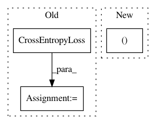

134d00c07c5f2bfb6e79811e9397e5a111635f91,art/attacks/spatial_transformation_unittest.py,TestSpatialTransformation,test_ptclassifier,#TestSpatialTransformation#,329
Before Change
model = Model()
// Define a loss function and optimizer
loss_fn = nn.CrossEntropyLoss()
optimizer = optim.Adam(model.parameters(), lr=0.01)
// Get classifier
ptc = PyTorchClassifier((0, 1), model, loss_fn, optimizer, (1, 28, 28), 10)
After Change
x_train = np.swapaxes(x_train, 1, 3)
x_test = np.swapaxes(x_test, 1, 3)
model, loss_fn, optimizer = get_model_pt()
// Get classifier
ptc = PyTorchClassifier((0, 1), model, loss_fn, optimizer, (1, 28, 28), 10)
In pattern: SUPERPATTERN
Frequency: 3
Non-data size: 3
Instances
Project Name: IBM/adversarial-robustness-toolbox
Commit Name: 134d00c07c5f2bfb6e79811e9397e5a111635f91
Time: 2019-02-11
Author: beat.buesser@ie.ibm.com
File Name: art/attacks/spatial_transformation_unittest.py
Class Name: TestSpatialTransformation
Method Name: test_ptclassifier
Project Name: NVIDIA/sentiment-discovery
Commit Name: 8030eeca74b6634f2a60168516573912aaa9cd65
Time: 2018-11-20
Author: raulp@nvidia.com
File Name: model/modeling.py
Class Name: BertForSequenceClassification
Method Name: forward
Project Name: NVIDIA/sentiment-discovery
Commit Name: 8030eeca74b6634f2a60168516573912aaa9cd65
Time: 2018-11-20
Author: raulp@nvidia.com
File Name: model/modeling.py
Class Name: BertForPreTraining
Method Name: forward